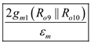

Step 1:
Refer to Figure 12.23 in the text book for the 741 input stage.
Since the negative feedback increases the resistance at node Y by an amount of negative feedback, break the loop at Y and connect a resistance, between the common base connection of and ground.
Write the node equation at Y.
Since the loop gain is approximately equal to , substitute  for .
for .

Thus, the current i is,
.
Step 2:
Determine the common-mode transconductance at the input stage,  .
.
From the circuit, the current is,
Here,
is the error due to mismatches in the current-mirror load
Therefore,
Substituting for .
Thus, the common-mode transconductance of the input stage is .
Step 3:
Determine the  as the ratio of the differential transconductance
as the ratio of the differential transconductance  and the common-mode transconductance .
and the common-mode transconductance .
Here,  is the transconductance of
is the transconductance of  .
.
Substitute for  .
.
Thus, the CMRR is .
The result agrees with the equation 12.95 in the text book.